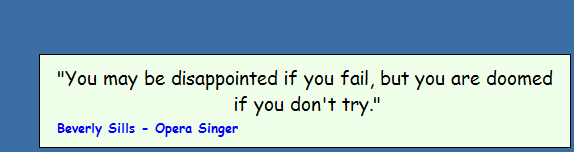
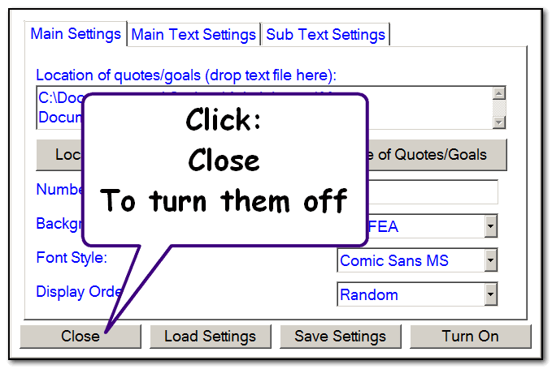
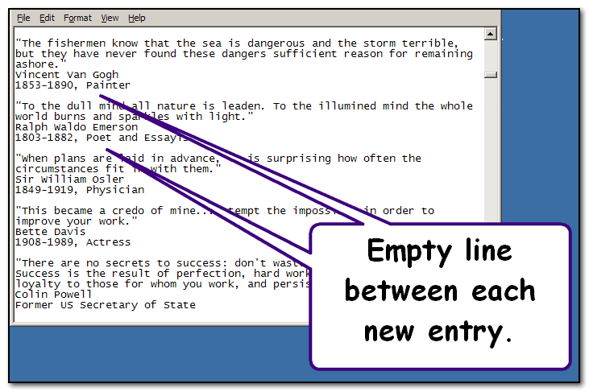
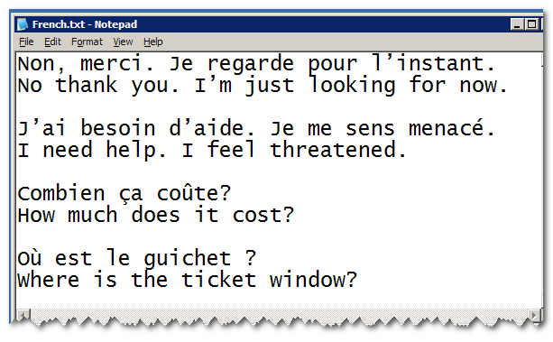
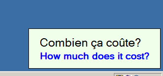

Inspirational Quotes or Goals
The Teacher Toolkit can keep you motivated by displaying inspirational quotes, or a list of your goals, at regular intervals.

The quote/goal will disappear when you click it, or when it's time for another to be displayed.
If you would like to turn the quotes off - use the menu to enter this topic and select close:

Any text file can be used as a list of quotes/goals - simply leave an empty line between each new entry:

Top tip:
If you are practising a new language, you may find it helpful to hear key sentences/phrases read out aloud - with the ability to view the translation until your confidence grows.
This can be achieved by setting the main text as the phrase you would like to hear, and turning the Text-To-Speech on for the Main Text Settings.
Then including the translation in the sub-text, but not enabling Text-To-Speech in the Sub Text Settings.

Provided you have a voice installed for the language you are learning, this will read a random phrase at regular time intervals and also show the translation if you need to check:
